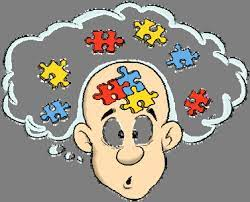
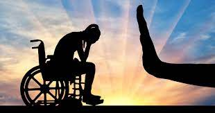
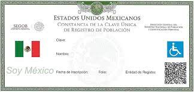

Discapacidad Física
 Es la secuela o malformación que deriva de una afección en el sistema neuromuscular a nivel central o periférico, dando como resultado alteraciones en el control del movimiento y la postura, y que al interactuar con las barreras que le impone el entorno social, pueda impedir su inclusión plena y efectiva en la sociedad, en igualdad de condiciones con los demás; Fracción adicionada DOF 22-06-2018.
Es la secuela o malformación que deriva de una afección en el sistema neuromuscular a nivel central o periférico, dando como resultado alteraciones en el control del movimiento y la postura, y que al interactuar con las barreras que le impone el entorno social, pueda impedir su inclusión plena y efectiva en la sociedad, en igualdad de condiciones con los demás; Fracción adicionada DOF 22-06-2018.
Discapacidad Mental
A la alteración o deficiencia en el sistema neuronal de una persona, que aunado a una sucesión de hechos que no puede manejar, detona un cambio en su comportamiento que dificulta su pleno desarrollo y convivencia social, y que al interactuar con las barreras que le impone el entorno social, pueda impedir su inclusión plena y efectiva en la sociedad, en igualdad de condiciones con los demás; Fracción adicionada DOF 22-06-2018.

Discapacidad Intelectual
 Se caracteriza por limitaciones significativas tanto en la estructura del pensamiento razonado, como en la conducta adaptativa de la persona, y que al interactuar con las barreras que le impone el entorno social, pueda impedir su inclusión plena y efectiva en la sociedad, en igualdad de condiciones con los demás; Fracción adicionada DOF 22-06-2018.
Se caracteriza por limitaciones significativas tanto en la estructura del pensamiento razonado, como en la conducta adaptativa de la persona, y que al interactuar con las barreras que le impone el entorno social, pueda impedir su inclusión plena y efectiva en la sociedad, en igualdad de condiciones con los demás; Fracción adicionada DOF 22-06-2018.
Discapacidad Sensorial
Es la deficiencia estructural o funcional de los órganos de la visión,audición, tacto, olfato y gusto, así como de las estructuras y funciones asociadas a cada uno de ellos, y que al interactuar con las barreras que le impone el entorno social, pueda impedirsu inclusión plena y efectiva en la sociedad, en igualdad de condiciones con los demás. Fracciónadicionada DOF 22-06-2018.
 |
 |
Discriminación por motivos de discapacidad
Se entenderá cualquier distinción, exclusión o restricción por motivos de discapacidad que tenga el propósito o el efecto de obstaculizar, menoscabar o dejar sin efecto el reconocimiento, goce o ejercicio, en igualdad de condiciones,de todos los derechos humanos y libertades fundamentales en los ámbitos político, económico, social, cultural, civil o de otro tipo. Incluye todas las formas de discriminación, entre ellas,la denegación de ajustes razonables; Fracción recorrida DOF 22-06-2018.

Educación Especial
 La educación especial está destinada a individuos con discapacidades transitorias o definitivas, así como a aquellos con aptitudes sobresalientes. Atenderá a los educandos de manera adecuada a sus propias condiciones, con equidad social incluyente y con perspectiva de género; Fracción recorrida DOF 22- 06-2018.
La educación especial está destinada a individuos con discapacidades transitorias o definitivas, así como a aquellos con aptitudes sobresalientes. Atenderá a los educandos de manera adecuada a sus propias condiciones, con equidad social incluyente y con perspectiva de género; Fracción recorrida DOF 22- 06-2018.
Educación Inclusiva
Es la educación que propicia la integración de personas con discapacidad a los planteles de educación básica regular, mediante la aplicación de métodos, técnicas y materiales específicos; Fracción recorrida DOF 22-06-2018 (sic DOF 12-07-2018).
Registro Nacional de Población con Discapacidad
Porcion del Registro Nacional de Población que solicitó la Certificación del Estado con Reconocimiento Nacional que refiere al artículo 10 de la Ley; Fracción adicionada DOF 12-07-2018

Rehabilitación
Proceso de duración limitada y con un objetivo definido, de orden médico, social y educativo entre otros, encaminado a facilitar que una persona con discapacidad alcance un nivel físico, mental, sensorial óptimo, que permita compensar la pérdida de una función, así como proporcionarle una mejor integración social; Fracción recorrida DOF 22-06-2018, 12-07-2018